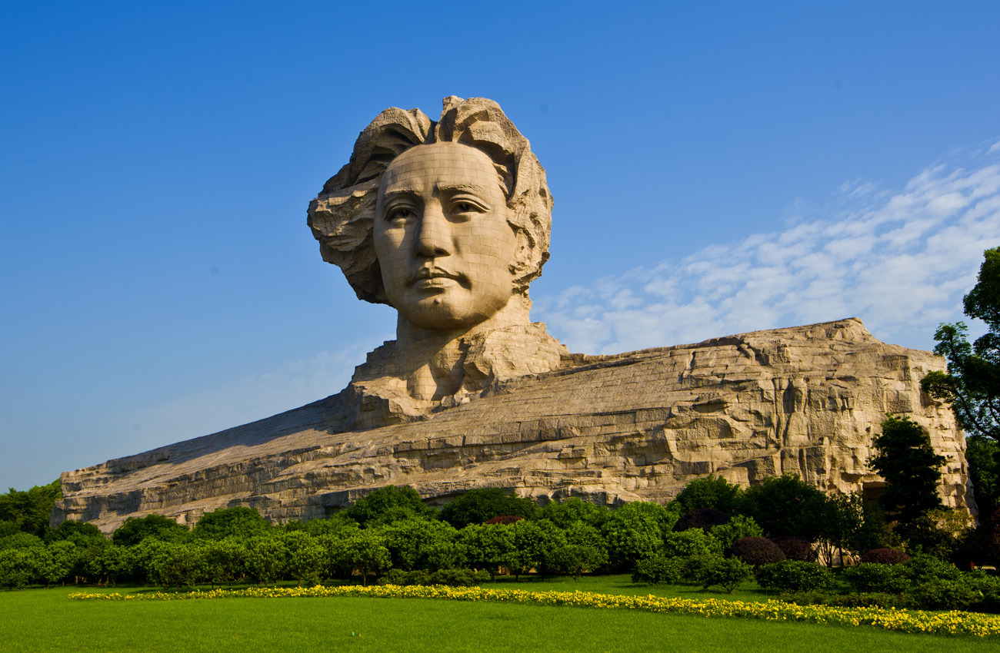

简介
橘子洲，位于湖南省长沙市区中湘江江心，北纬28°10′23.40″、东经112°57′18.36″，是湘江下游众多冲积沙洲之一。橘子洲西望岳麓山，东临长沙城，四面环水，长达5千米，狭处横约40米，宽处横约140米，最宽处仅300余米，岛形狭长，形似长龙。橘子洲大桥从上横跨而过，离长沙市中心1千米。 面积0.614平方千米。

景点特色
从自然演变过程来看，橘子洲为第四纪全新世时期形成的、典型的一级阶地地层，地貌属高河漫滩，主要由以下三方面因素作用而成：一是江心基岩凸起，湘江主流至此分流，分流携带的泥沙通过回流，淤落在江心突起之基岩上形成心滩；二是湘江长沙段江面变宽，江水流速减小，泥沙易于淤落；三是受下游浏阳河、捞刀河以及洞庭湖水顶托，泥沙易于淤落，天长地久，日积月累，“心滩”经新构造运动上升露出水面而形成一座江心岛。 橘子洲上生长着数千种花草藤蔓植物，其中名贵植物有143种。有鹤、鹭、鸥、狐、獾等珍稀动物
荣誉
2012年，长沙市岳麓山-橘子洲旅游区被评为国家AAAAA级景区，橘子洲是其重要组成部分。